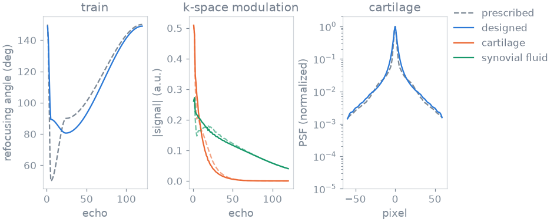
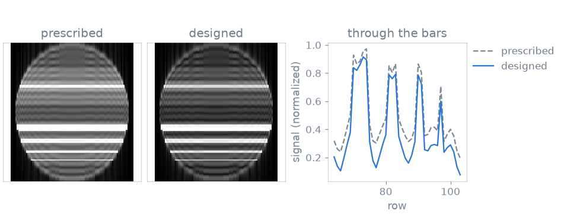
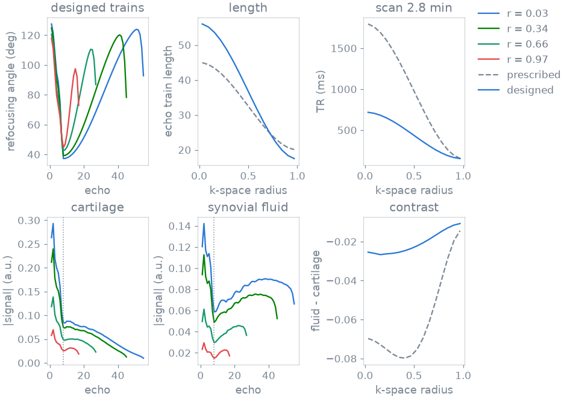

Note
Go to the end to download the full example code or to run this example in your browser via Binder.
Echo train design for sharpness#
In this example you design the refocusing flip angles of a fast spin echo for image quality rather than for precision: first one echo train, then a whole segmented 3D protocol in which each shot has its own repetition time, echo train length and angles.
T2 decay along a long train modulates k-space. That modulation is a point spread function, so the refocusing angles set the resolution of the image [1]. You design the angles against a cost that measures this blur, the contrast between tissues and the RF power.
Prerequisites: Course lesson 1. Your first simulation.
Design problem#
A design has three pieces. A simulator with the tissue fixed on it, a cost
written on the signal it records, and the bounded parameters that
SequenceDesign adjusts to lower the cost.
The tissues are those of a PD-weighted knee protocol, read for the separation between fluid and cartilage. The design uses all three at once, so that the train is not tailored to one of them. T1 and T2 are in milliseconds:
import torch
from blochsim.optim import Bounded, SequenceDesign
from blochsim.simulators import FSESimulator
TISSUES = {
# cartilage muscle synovial fluid
"T1": [1200.0, 1420.0, 3600.0],
"T2": [35.0, 30.0, 250.0],
}
CARTILAGE, MUSCLE, FLUID = 0, 1, 2
Blur#
Let the echo index run along one k-space direction. The magnitude of the echo train is then the k-space modulation, and the width of its Fourier transform is the blur it adds. You can read that width off the modulation without a transform: the second moment of \(|\mathcal{F}w|^2\) is the energy in the slope of the train \(w\) divided by the energy in \(w\).
A train that stops early contributes fewer terms, so trains of different
lengths compare on the same footing. The second half of this example needs
that. signal is (shots, tissues, echoes) and acquired is
(shots, echoes), one where the shot is still acquiring. The result is the
blur in pixels, (shots, tissues):
def blur(signal, acquired):
pair = acquired[:, None, :-1] * acquired[:, None, 1:]
step = torch.diff(signal, dim=-1) * pair
energy = (signal * acquired[:, None, :]).square().sum(-1).clamp_min(1e-12)
lines = acquired.sum(-1)[:, None]
return lines / (2 * torch.pi) * (step.square().sum(-1) / energy).sqrt()
Echo train#
A 120-echo train has 120 angles but three degrees of freedom:
the minimum angle, which sets how much flow and motion spoil the train;
the angle at the centre of k-space, which sets the image contrast;
the maximum angle, which the deposited RF power limits.
The train starts at the maximum, drops to the minimum as the pseudo steady state is established, rises to the centre-of-k-space angle where the centre of k-space is sampled, and ramps back up to the maximum:
ESP_MS = 5.0
ECHOES = 120
CENTRE_ECHO = 24
one_train = FSESimulator(ESP=ESP_MS, states=12, **TISSUES)
echo = torch.arange(1, ECHOES + 1, dtype=torch.float32)
def ramp(index, start, stop, first, last):
"""A smooth step from ``first`` to ``last`` between two echo indices."""
span = ((index - start) / (stop - start).clamp_min(1e-3)).clamp(0.0, 1.0)
return first + (last - first) * span.square() * (3.0 - 2.0 * span)
def shape(index, control, length, centre_echo):
"""Refocusing angles of a train of ``length`` echoes.
``control`` is ``(shots, 3)``: the minimum, centre-of-k-space and maximum
angles. ``centre_echo`` is the echo that samples the centre of the shot's
k-space band.
"""
low, middle, high = control[:, 0:1], control[:, 1:2], control[:, 2:3]
settled = torch.full_like(low, 5.0)
sampled = torch.full_like(low, float(centre_echo))
return torch.where(
index <= 5,
ramp(index, torch.ones_like(low), settled, high, low),
torch.where(
index <= centre_echo,
ramp(index, settled, sampled, low, middle),
ramp(index, sampled, length, middle, high),
),
)
Cost#
The image should be sharp, fluid should stand out from cartilage, and the RF power should stay where the scanner accepts it. Power is the refocusing energy, relative to a train of 180 degree pulses, divided by the time it is spread over. A train that ends early gets no credit for echoes it never played:
LOWEST = torch.tensor([20.0, 30.0, 60.0])
HIGHEST = torch.tensor([90.0, 160.0, 170.0])
PRESCRIBED = torch.tensor([[50.0, 90.0, 150.0]])
ALWAYS = torch.ones(1, ECHOES)
def power(flip, acquired, TR_ms):
energy = ((flip / 180.0).square() * acquired).sum(-1)
return energy / (TR_ms.squeeze(-1) * 1e-3)
The scanner limits RF power, so the cost may spend up to what the prescribed train already deposits and no more. The weights set the trade between the three terms:
POWER_BUDGET = power(
shape(echo, PRESCRIBED, torch.full((1, 1), float(ECHOES)), CENTRE_ECHO),
ALWAYS,
torch.full((1, 1), 1800.0),
).mean()
def single_train(control):
flip = shape(echo, control, torch.full_like(control[:, :1], ECHOES), CENTRE_ECHO)
signal = one_train.simulate(flip=flip, TR=1800.0).abs()
at_centre = signal[:, :, CENTRE_ECHO - 1]
contrast = at_centre[:, FLUID] - at_centre[:, CARTILAGE]
deposited = power(flip, ALWAYS, torch.full_like(control[:, :1], 1800.0))
return (
blur(signal, ALWAYS).mean()
- 12.0 * contrast.mean()
+ 20.0 * torch.relu(deposited.mean() / POWER_BUDGET - 1.0)
)
Optimization#
Start from a conventional prescription: 50 degree minimum, 90 degree
centre-of-k-space angle and 150 degree maximum. Bounded
holds each angle inside the limits the scanner plays:
design = SequenceDesign(single_train, control=Bounded(PRESCRIBED, LOWEST, HIGHEST))
one = design.minimize(iterations=25, learning_rate=0.3)
one train of 120 echoes designed in 0.10 s, 4.0 ms per iteration
Simulate the prescribed and the designed trains, and compare the angles, the signal and the point spread:
LENGTH = torch.full((1, 1), float(ECHOES))
prescribed_flip = shape(echo, PRESCRIBED, LENGTH, CENTRE_ECHO)
designed_flip = shape(echo, one.parameters["control"], LENGTH, CENTRE_ECHO)
prescribed_signal = one_train.simulate(flip=prescribed_flip, TR=1800.0).abs()
designed_signal = one_train.simulate(flip=designed_flip, TR=1800.0).abs()

prescribed min 50.0 centre 90.0 max 150.0 deg | blur 2.79 px | fluid - cartilage 0.100
designed min 89.4 centre 80.6 max 149.0 deg | blur 2.25 px | fluid - cartilage 0.112
The designed train has a lower blur and keeps the contrast at the centre of k-space. The cartilage point spread narrows from the prescribed to the designed train.
Image#
The echo index runs along one k-space direction, so forming the image is a multiplication. Transform each tissue’s contribution along the phase-encode axis, weight every line by the train at the echo that sampled it, and transform back. A train that decays fast weights the edges of k-space down, and the image comes back smeared.
The phantom is a cartoon knee: a cartilage band with a two-pixel joint line, and four fluid bars five, three, two and one pixels thick. No noise is added, so the two images differ only by the train.

The joint line and the thin bars show a point spread of a pixel or two. The ringing at every edge comes from the finite matrix, not from the train. The design moves the depth of the troughs between the bars.
Sharpness moved without giving up contrast: the fluid-to-cartilage difference at the centre of k-space is within a percent of where it started, and the point spread narrowed by nearly a fifth. The power term keeps the deposited power at or below the prescribed level.
The one-pixel bar is the limit. A point spread narrower than a pixel is not available, so a bar that is flat in both images is flattened by the matrix.
Segmented protocol#
Segmented 3D TSE splits k-space over many shots. The centre of k-space sets the contrast and the periphery sets the sharpness. With parameters specific to each shot, the protocol can use a long repetition time for the shots that determine contrast and a short one for the others [2].
The prescription is two sets of numbers, one at the centre and one at the periphery, and a cubic transition fills in every shot between them. The repetition time, the echo train length and the three control angles transition:
ESP_SPACE_MS = 3.5
TE_MS = 28.0
TE_ECHO = round(TE_MS / ESP_SPACE_MS)
GRID = 64 # padded echo axis, at least as long as the longest train
# 320 x 240 phase-encode matrix, CAIPIRINHA 4, elliptical scanning.
LINES = round(320 * 240 / 4 * torch.pi / 4)
BUDGET_S = 300.0
SAMPLES = 16
protocol_shots = FSESimulator(ESP=ESP_SPACE_MS, states=12, **TISSUES)
grid_echo = torch.arange(1, GRID + 1, dtype=torch.float32)
# Each sampled radius stands for the shots at that distance from the centre of
# k-space. Their number grows with radius, which is the area element of the
# phase-encode plane.
radius = (torch.arange(SAMPLES, dtype=torch.float32) + 0.5) / SAMPLES
density = 2 * radius / (2 * radius).sum()
cubic = (3 * radius.square() - 2 * radius.pow(3))[:, None]
def transition(centre, periphery):
return centre + (periphery - centre) * cubic
The shots differ in length. A long train at the centre is acceptable because the contrast is set by one echo of it. A short train at the periphery limits the T2 blur of its lines. A train that has ended is masked out of the padded echo axis.
A refocusing angle of exactly zero is a corner, not a point: what reaches the scanner is a magnitude, which has no sign there. The mask therefore floors at a negligible angle:
FLOOR = 1e-6
def protocol(
centre_control, edge_control, centre_length, edge_length, centre_TR, edge_TR
):
control = transition(centre_control, edge_control)
length = transition(centre_length, edge_length)
TR = transition(centre_TR, edge_TR)
acquired = torch.sigmoid(length - grid_echo).clamp_min(FLOOR)
flip = shape(grid_echo, control, length, TE_ECHO) * acquired
return flip, TR, length, acquired
Covering k-space ties the two ends together. A shot covers as many lines as its train is long, so the number of shots is the number of lines divided by the average train length, and the scan time is that many shots at the average repetition time. Longer trains at the centre allow a longer repetition time there:
def measure(**design):
"""Everything the cost reads, from one batched simulation of all shots."""
flip, TR, length, acquired = protocol(**design)
signal = protocol_shots.simulate(flip=flip, TR=TR).abs()
shots = LINES / (density * acquired.sum(-1)).sum()
scan_s = shots * (density * TR.squeeze(-1)).sum() * 1e-3
return signal, flip, TR, length, acquired, shots, scan_s
def deposited(flip, acquired, TR):
return (density * power(flip, acquired, TR)).sum()
# The exam may spend the power the prescription deposits.
PRESCRIBED_PROTOCOL = protocol(
PRESCRIBED,
PRESCRIBED,
torch.tensor([[45.0]]),
torch.tensor([[20.0]]),
torch.tensor([[1800.0]]),
torch.tensor([[150.0]]),
)
SPACE_POWER_BUDGET = deposited(
PRESCRIBED_PROTOCOL[0], PRESCRIBED_PROTOCOL[3], PRESCRIBED_PROTOCOL[1]
)
The cost asks for sharpness where it is decided (the outer shots) and for contrast where it is decided (the inner shots). It also penalizes a scan longer than the budget, a train that does not fit inside its repetition time with 60 ms for the excitation and fat saturation, and RF power above the prescription:
def image_quality(**design):
signal, flip, TR, length, acquired, shots, scan_s = measure(**design)
at_centre = signal[:, :, TE_ECHO - 1]
contrast = at_centre[:, FLUID] - at_centre[:, CARTILAGE]
outer, inner = density * radius, density * (1.0 - radius)
infeasible = torch.relu(
length.squeeze(-1) * ESP_SPACE_MS + 60.0 - TR.squeeze(-1)
).mean()
return (
0.7 * (outer * blur(signal, acquired).mean(-1)).sum() / outer.sum()
- 12.0 * (inner * contrast).sum() / inner.sum()
+ 20.0 * torch.relu(scan_s - BUDGET_S) / BUDGET_S
+ 10.0 * infeasible / 60.0
+ 20.0 * torch.relu(deposited(flip, acquired, TR) / SPACE_POWER_BUDGET - 1.0)
)
Start from the prescription of the abstract in [2]: a 45-echo train at 1800 ms at the centre and a 20-echo train at 150 ms at the periphery:
PRESCRIPTION = {
"centre_control": Bounded(PRESCRIBED, LOWEST, HIGHEST),
"edge_control": Bounded(PRESCRIBED, LOWEST, HIGHEST),
"centre_length": Bounded(torch.tensor([[45.0]]), 12.0, 60.0),
"edge_length": Bounded(torch.tensor([[20.0]]), 12.0, 60.0),
"centre_TR": Bounded(torch.tensor([[1800.0]]), 150.0, 2600.0),
"edge_TR": Bounded(torch.tensor([[150.0]]), 150.0, 2600.0),
}
design = SequenceDesign(image_quality, **PRESCRIPTION)
many = design.minimize(iterations=40, learning_rate=0.2)
a whole protocol designed in 1.46 s, 36.6 ms per iteration
The number of shots follows from the echo train lengths. Compare the prescribed and the designed protocol:
centre of k-space periphery
ETL TR ETL TR shots scan
prescribed 44.9 1795 ms 20.1 155 ms 558 6.01 min
designed 56.0 717 ms 17.5 152 ms 529 2.83 min
refocusing angles min centre-of-band max
prescribed, centre 50.0 90.0 150.0
prescribed, periphery 50.0 90.0 150.0
designed, centre 88.8 37.2 127.5
designed, periphery 72.4 44.6 118.0
fluid - cartilage at the centre -0.070 -> -0.025
blur at the periphery 0.48 -> 0.43 px
RF power 22.51 -> 19.33 (budget 22.51)
Each curve in the first panel is one sampled distance from the centre of k-space. Shots between the curves read the curve at their own radius, so k-space has no discontinuities between shots.

Specification#
What this example did, stated the way you would ask an agent for it:
With blochsim, design the refocusing angles of a 120-echo fast spin echo
for a knee (cartilage, muscle, synovial fluid; ESP 5 ms, TR 1800 ms).
Parameterize the train by its minimum, centre-of-k-space and maximum
angles, bounded to what the scanner plays. Minimize the blur of the echo
train, minus the fluid-to-cartilage contrast at the centre, under an RF
power budget. Show the point spread and a phantom image before and after.
Then design a segmented 3D protocol whose repetition time, train length
and angles transition cubically from the centre to the periphery of
k-space, under a scan-time budget of 300 s.
References#
Total running time of the script: (0 minutes 2.840 seconds)